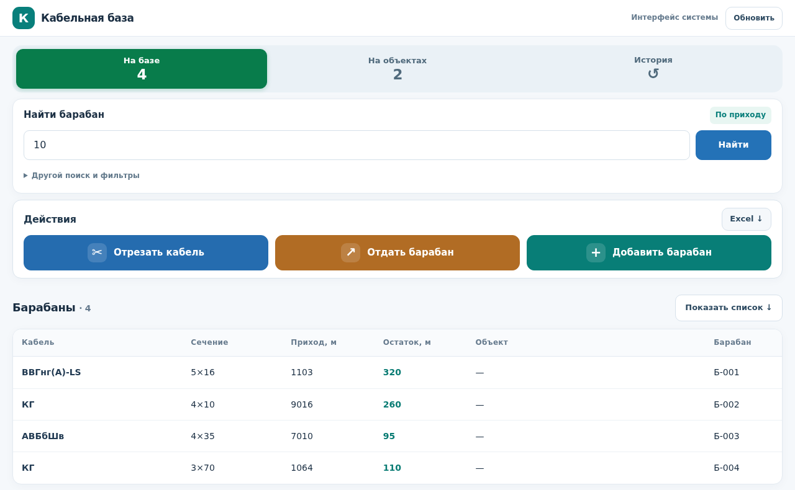
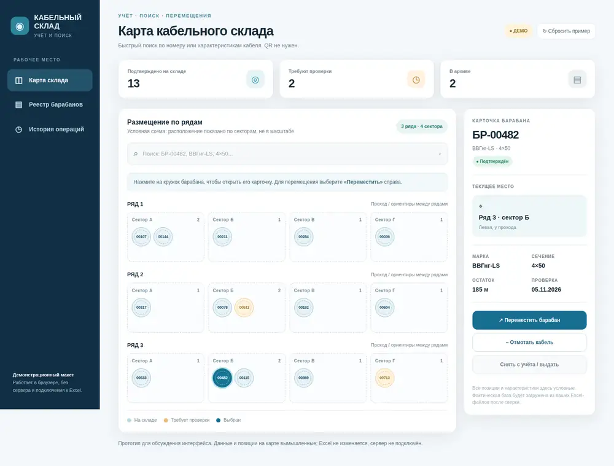

Manual search
Inventory data existed in spreadsheets, while physical positions needed manual confirmation. Frequent moves complicated retrieval.
An internal web system for cable-drum records: receipt-number search, remaining lengths, locations and a readable movement history. Built around a real warehouse challenge.
A focused internal tool designed for one real inventory process.
Inventory data existed in spreadsheets, while physical positions needed manual confirmation. Frequent moves complicated retrieval.
Each record represents one drum holding one cable type. Fields: name, section, receipt, remaining length, site assignment and notes.
Results filter as digits are typed. Each history event can be expanded to reveal the details.
Type 1, 10 or any receipt-number substring. Expand a history event to explore it.
Six fictional inventory entries for UI demonstration.
| Receipt | Cable type | Section | Remaining | Status |
|---|---|---|---|---|
| 1103 | Power cable | 5×16 | 320 m | In storage |
| 2108 | Power cable | 3×2.5 | 180 m | Assigned |
| 7010 | Armoured cable | 4×35 | 95 m | In storage |
| 1064 | Flexible cable | 3×70 | 110 m | In storage |
| 2045 | Flexible cord | 3×1.5 | 75 m | Assigned |
| 9016 | Flexible cable | 4×10 | 260 m | In storage |
An inventory screen and an early direction explored during development.


Project capabilities and next steps without inventing deployment impact.
Entering any receipt-number substring filters the records immediately.
Drum identity, cable specification, remaining length and location stay in one record.
Different operation types are easy to distinguish, and details expand on demand.
Target architecture is internal enterprise hosting with IT-approved secure access from employees' phones.
We can review your process and design a focused internal tool.